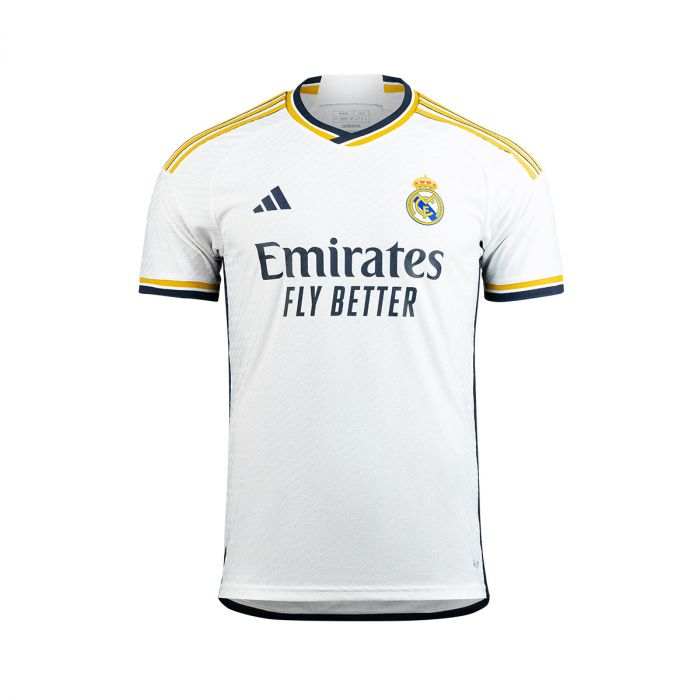
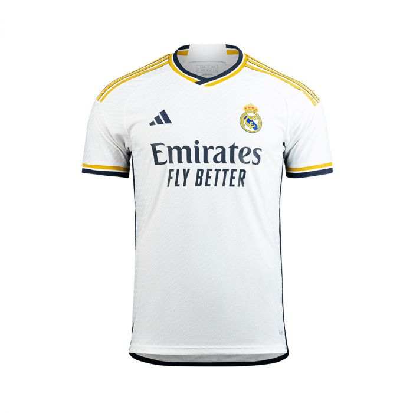

สโมสรฟุตบอลเรอัลมาดริด (สเปน: Real Madrid Club de Fútbol) เป็นสโมสรฟุตบอลในประเทศสเปน ตั้งอยู่ที่กรุงมาดริด ปัจจุบันเล่นอยู่ในลาลิกา ลีกสูงสุดของฟุตบอลสเปน สโมสรก่อตั้งขึ้นใน ค.ศ. 1902 เป็นหนึ่งในสโมสรที่ประสบความสำเร็จมากที่สุดในทวีปยุโรป[3] ชื่อ "เรอัล" เป็นสร้อยคำนำหน้าที่ได้รับพระราชทานจากพระเจ้าอัลฟอนโซที่ 13 แห่งสเปน ใน ค.ศ. 1920 ซึ่งมีความหมายว่า "ของกษัตริย์หรือของหลวง" และยังเป็นที่มาของมงกุฏซึ่งปรากฏในตราสัญลักษณ์ของสโมสร มีสนามเหย้าคือซานเตียโก เบร์นาเบว ตั้งอยู่ใจกลางกรุงมาดริดซึ่งถูกใช้งานมาตั้งแต่ ค.ศ. 1947 สีประจำสโมสรคือสีขาวและเพลงประจำสโมสรคือ อาลา มาดริด อี นาดา มาส ประพันธ์โดยเรดวัน และ มานูเอล จาบัวส์ เรอัลมาดริดเป็นหนึ่งในสโมสรที่ได้รับความนิยมมากที่สุดในโลก[4] พวกเขายังเป็นสโมสรแรกในห้าลีกใหญ่ของยุโรปที่ชนะเลิศถ้วยรางวัลครบ 100 รายการ และเป็นสโมสรที่ลงแข่งขันรายการยูโรเปียนคัพ/ยูฟ่าแชมเปียนส์ลีกมากที่สุดจำนวน 42 ฤดูกาล ซึ่งพวกเขายังเป็นเจ้าของสถิติในการชนะมากที่สุด เสมอมากที่สุด และทำประตูได้มากที่สุดในรายการดังกล่าว[5]
เรอัลมาดริดเป็นสโมสรที่มีหุ้นส่วน (socios) เป็นเจ้าของ และเป็นผู้ดำเนินการมาตั้งแต่ ค.ศ. 1902 ซึ่งแตกต่างกับสโมสรส่วนใหญ่ และเป็นสโมสรที่มีชื่อเสียงและร่ำรวยที่สุดสโมสรหนึ่งของโลก[6] รวมทั้งมีมูลค่าทีมสูงที่สุดในโลกจำนวน 5.1 พันล้านดอลลาร์ใน ค.ศ. 2022[7] และมีรายรับมากที่สุดเป็นอันดับสองของโลกใน ค.ศ. 2023 จำนวน 713.8 ล้านยูโร[8] เรอัลมาดริดเป็นหนึ่งในสามสโมสรผู้ร่วมก่อตั้งลาลิกาซึ่งไม่เคยตกชั้นจากลีกสูงสุดนับตั้งแต่ก่อตั้งลีกใน ค.ศ. 1929 ร่วมกับอัตเลติกเดบิลบาโอ และ บาร์เซโลนา สโมสรมีคู่ปรับคือบาร์เซโลนา และ อัตเลติโกเดมาดริด โดยถือเป็นศึกแห่งศักดิ์ศรีที่เรียกว่า เอลกลาซิโก และ เดร์บิมาดริเลญโญ
เรอัลมาดริดเริ่มครองความยิ่งใหญ่ในประเทศได้ตั้งแต่ยุคแรก ๆ ของการก่อตั้งลาลิกา และกลายเป็นทีมชั้นนำของยุโรปในช่วงทศวรรษ 1950 โดยประสบความสำเร็จหลายรายการ[9] สโมสรชนะเลิศยูโรเปียนคัพ 5 สมัยติดต่อกัน รวมทั้งชนะเลิศลาลิกา 4 สมัยในช่วงเวลานี้ ต่อมา ในทศวรรษ 1960 สโมสรชนะเลิศลาลิกาได้ถึง 8 สมัยจาก 10 ฤดูกาล ด้วยผู้เล่นชั้นนำ ได้แก่ อัลเฟรโด ดิ เอสเตฟาโน, แฟแร็นตส์ ปุชกาช, ปาโก เฆนโต และ เรมง โกปา ซึ่งได้รับการยกย่องว่าเป็นหนึ่งในทีมที่ดีที่สุดตลอดกาลของโลก[10][11] สโมสรยังมีชื่อเสียงจากนโยบายการสร้างทีมด้วยผู้เล่นระดับโลกที่เรียกว่าโลสกาลักติโกส อาทิ โรนัลโด, ซีเนดีน ซีดาน, เดวิด เบคแคม และ กาก้า[12] โดยใน ค.ศ. 2009 สโมสรได้เซ็นสัญญากับ คริสเตียโน โรนัลโด ด้วยค่าตัวสถิติโลกในขณะนั้นจำนวน 80 ล้านปอนด์ (94 ล้านยูโร) ซึ่งกลายเป็นผู้ทำประตูสูงสุดตลอดกาลของสโมสร[13] โดยในปัจจุบันภายใต้การบริหารทีมของ โฟลเรนติโย เปเรซ สโมสรยังยึดนโยบายโลสกาลักติโกส ด้วยการใช้ผู้เล่นระดับโลกซึ่งอายุน้อยอย่าง วีนีซียุส ฌูนีโยร์, โรดรีกู กอยส์ และ จูด เบลลิงงัม เป็นแกนหลัก[14]
ในการแข่งขันภายในประเทศ เรอัลมาดริดชนะเลิศถ้วยรางวัล 70 รายการ[15] ประกอบด้วยสถิติชนะเลิศลาลิกา 35 สมัย, โกปาเดลเรย์ 20 สมัย, ซูเปร์โกปาเดเอสปัญญา 13 สมัย รวมทั้งโกปาเอบาดัวร์เตและโกปาเดลาลิกา ในการแข่งขันระดับทวีปและระดับโลก พวกเขาชนะเลิศการแข่งขัน 29 รายการ ประกอบด้วยสถิติชนะเลิศยูโรเปียนคัพ / ยูฟ่าแชมเปียนส์ลีก 14 สมัย, ยูฟ่าคัพ 2 สมัย, ยูฟ่าซูเปอร์คัพ 5 สมัย (สถิติสูงสุด), อินเตอร์คอนติเนนตัลคัพ 3 สมัย (สถิติสูงสุด) และ ฟุตบอลชิงแชมป์สโมสรโลก 5 สมัย (สถิติสูงสุด)[16] เรอัลมาดริดยังเป็นสโมสรเดียวที่ชนะการแข่งขันยูโรเปียนคัพ/ยูฟ่าแชมเปียนส์ลีก 3 สมัยติดต่อกันได้ถึงสองครั้งใน ค.ศ. 1956–58 และ ค.ศ. 2016–18
เมื่อวันที่ 11 ธันวาคม ค.ศ. 2000 ฟีฟ่าได้ประกาศให้เรอัลมาดริดเป็นสโมสรที่ดีที่สุดแห่งคริสต์ศตวรรษที่ 20[17] และยังได้รับรางวัลสโมสรผู้ทรงอิทธิพลและทำผลงานได้ยอดเยี่ยมที่สุดแห่งคริสต์ศตวรรษที่ 20 (FIFA Centennial Order of Merit) ใน ค.ศ. 2004 รวมทั้งรางวัลสโมสรยุโรปยอดเยี่ยม จากสหพันธ์ประวัติศาสตร์และสถิติฟุตบอลนานาชาติใน ค.ศ. 2010 ต่อมา ใน ค.ศ. 2017 เรอัลมาดริดสร้างประวัติศาสตร์เป็นสโมสรแรกที่สามารถป้องกันแชมป์ยูฟ่าแชมเปียนส์ลีกได้ นับตั้งแต่เปลี่ยนชื่อมาจากยูโรเปียนคัพ และในปีต่อมา สโมสรทำสถิติชนะเลิศยูฟ่าแชมเปียนส์ลีก 4 สมัยในรอบ 5 ปี ต่อมา ใน ค.ศ. 2023 เรอัลมาดริดถูกจัดอยู่ในอันดับห้าตามค่าสัมประสิทธิ์สโมสรฟุตบอลยุโรป และเป็นอันดับหนึ่งจากการจัดอันดับรวมใน 10 ฤดูกาลหลังสุด (ค.ศ. 2013–2023)[18]
ที่มาhttps://th.wikipedia.org/wiki/
 
